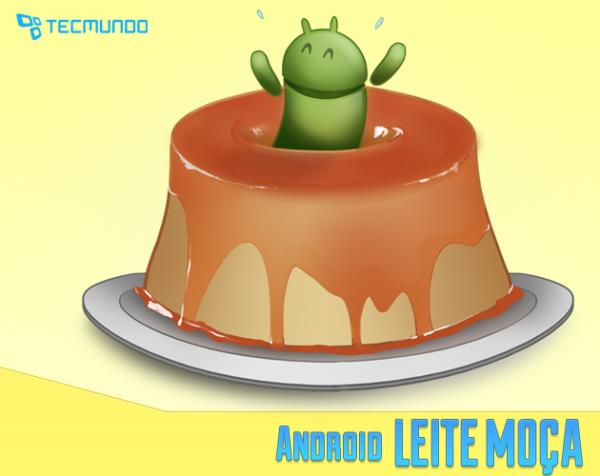

Os novos doces do Android
Recentemente, a Google anunciou que em breve será lançada a versão 4.4 KitKat do sistema operacional Android. Desde sempre, os nomes das versões do sistema são relacionados a doces, mas essa foi a primeira vez que isso fez referência direta a uma marca de chocolates. Será que essa é a única vez em que tal fato vai acontecer?
Nós achamos que não. Por isso, pensamos em uma série de versões que podem ser lançadas no futuro. Será que o Android poderia chegar ao mercado com novos doces e alguns recursos relacionados a eles? Hoje, você vai conferir como isso aconteceria se o Tecmundo fosse a Google. Será que os seus doces favoritos vão estar nessa lista de versões para o futuro dos portáteis?
Desde que o Android foi lançado, as versões dele são colocadas no mercado com nomes de doces — o que facilita bastante a diferenciação. Isso aconteceu com o 1.5 Cupcake, 1.6 Donut, 2.0 Eclair, 2.2 Froyo, 2.3 Gingerbread, 3.0 Honeycomb, 4.0 Ice Cream Sandwich e 4.1 Jelly Bean. Agora, a história vai se repetir na versão 4.4 do sistema operacional portátil da Google, que chegará ao mercado sob a nomenclatura de KitKat.
Isso mesmo: em uma parceria entre a Google e a Nestlé, o próximo Android será o “Android 4.4 KitKat”. Ainda não há informações sobre os recursos que estarão disponíveis na nova versão do sistema operacional e também não há qualquer especulação sobre uma possível data de lançamento.
O que temos é apenas a logo do sistema, que mostra vários tabletes do chocolate mundialmente famoso. Os desenvolvedores do Android lançaram uma página bem interessante que mostra a história dos nomes das versões do sistema operacional e você pode ter acesso a ela por este link. Vale dizer que, aparentemente, o acordo não envolveu dinheiro e é apenas uma parceria.
Já está no jardim da Google
Para quem achou que isso era brincadeira, aí vai mais uma imagem que comprova a história. Sundar Pichai (vice-presidente Sênior da Google) compartilhou uma foto em seu perfil no Google+, mostrando a estátua do Android KitKat no jardim da empresa de Mountain View. Confira logo abaixo:
Android Nutella
Para alguns ele é apenas um creme de avelã, mas existe um grande número de pessoas que venera os potes de Nutella — colocando o doce no pão, biscoito, macarrão, X-Salada e também no tomate. Pensando nisso, a Google pode firmar acordos com a fabricante para fazer com que o Android Nutella chegue ao mercado em um futuro não muito distante.
Jogadas de marketing muito interessante podem surgir nessa parceria. Já pensou em comprar um pote de 2 kg de Nutella e encontrar um smartphone de última geração dentro dele? Pois isso é bem possível. Os consumidores só teriam que tomar cuidado para não comer os celulares sem querer — e nem se esquecer de limpar o aparelho antes de utilizar, não é mesmo?
Android Chupa Chups
Você já deve ter percebido que existe uma tendência bem evidente das empresas fabricantes de celulares. Os aparelhos não são mais limitados às cores preta ou branca, podendo apresentar as mais diversas tonalidades. E quais os doces que chegam mais perto dessas colorações?
Os pirulitos, é claro. Por isso a Google pode tranquilamente apresentar o Android Chupa Chups. Com isso, o Android passaria a ser mais colorido e divertido — se adaptando facilmente às tendências do mercado atual. Um dos grandes destaques do Android Chupa Chups seria o novo conjunto de cases com palitos.
Android leite Moça
Há quem ache que utilizar um smartphone é uma tarefa difícil, mas a verdade é bem diferente. Mesmo assim, a Google pode criar uma versão do Android que seja completamente voltada aos usuários iniciantes. E essa versão deve mesmo se chamar Android Leite Moça, tendo o pudim como mascote. O slogan está quase pronto: “Você quer utilizar um Android e não sabe como? É mole!”.
Android Tortuguita
Na América Latina, uma das grandes parcerias da Google deve ser mesmo a Arcor. Com isso, não se assuste ao chegar às lojas e encontrar um Android Tortuguita rodando nos smartphones mais poderosos. O sistema operacional pode apresentar algumas novidades bem interessantes para os consumidores.
Os cases em formas de cascos também são esperados por todos. Além disso, o Android Tortuguita vai trazer, pela primeira vez, recursos de inteligência artificial para os celulares. Quem optar por essa versão do sistema ainda vai ganhar algumas caixas de chocolate e um guia de instruções para comê-los do jeito certo.
Android Ferrero Rocher
Assim como o Nutella, o Ferrero Rocher é fabricado pela empresa Ferrero. Mas, ao contrário da primeira versão apresentada, esta aqui vai ser difícil de ser acessada. Trata-se de uma edição limitada do Android, que só pode ser instalada em aparelhos autorizados de uma quantidade restrita de usuários — que vão ser chamados de “embaixadores” pela Google.
Com isso, o Android Ferrero Rocher terá elementos mais requintados e aplicativos exclusivos. A Google já preparou até mesmo o slogan para essa versão dos aparelhos: “As aplicações do embaixador são marcadas pelo gosto refinado na atualização”.
Android Paçoquita
“Feito para os brasileiros”... É assim que a Google pretende promover o Android Paçoquita, que pode chegar ao mercado nos próximos anos. Com grandes novidades para os consumidores do Brasil, o sistema operacional pode contar com recursos exclusivos de acesso a aplicativos de esportes e educação.

Além disso, ele ainda terá um recurso de deixar qualquer estrangeiro com inveja. Os consumidores que utilizarem o Android Paçoquita vão receber caixas do doce todos os meses. Você gostaria de receber uma novidade dessas no seu smartphone?
Atenção: este artigo faz parte do quadro "Erro 404", publicado semanalmente no Baixaki e Tecmundo com o objetivo de trazer um texto divertido aos leitores do site. Algumas das informações publicadas aqui são fictícias, ou seja, não correspondem à realidade.
Ilustrações por: Aline Sentone